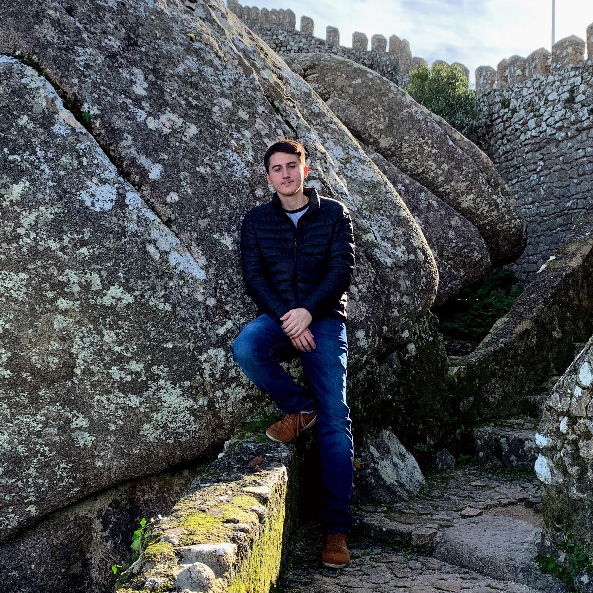

Meu nome é Paulo Scapol Barbosa, naci na cidade de São Bernardo do Campo, São Paulo, Brasil, mas morei dos meus 11 meses até meus 15 anos na cidade de Resende, interior do Rio de Janeiro.
Aos meus 16 anos de idade, mudei ao México com a minha família, por causa do trabalho do meu pai, e lá estudei os últimos 2 anos do Ensino Médio e a Faculdade de Engenharia Civil.
Agora, já formado engenheiro, voltei para Resende em busca de trabalho, porém, depois de algumas entrevistas sem respostas, decidi que queria tentar algo novo e foi assim que decidi me matricular no curso de Desenvolvimento Web na Trybe.